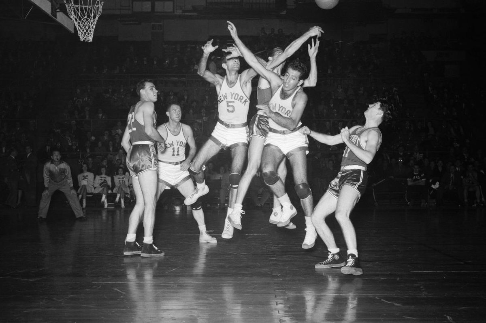

History of the NBA

The National Basketball Association (NBA) was founded in New York City on June 6, 1946, as the Basketball Association of America (BAA). The league adopted the name National Basketball Association on August 3, 1949, after merging with the competing National Basketball League (NBL).
Early Years (1946-1956)
The NBA began with 11 teams, and through a series of team expansions, reductions, and relocations, currently consists of 30 teams. The United States is home to 29 teams; another is in Canada. The current league organization divides 30 teams into two conferences of three divisions with five teams each. The current divisional alignment was introduced in the 2004–05 season.
Golden Era (1956-1979)
This period saw the dominance of the Boston Celtics, who won 11 championships in 13 years, including eight consecutive from 1959 to 1966. The rivalry between the Celtics and the Lakers defined much of the NBA's history. Stars like Bill Russell, Wilt Chamberlain, and Kareem Abdul-Jabbar dominated this era.
Modern Era (1980-Present)
The modern era began with the rivalry between the Los Angeles Lakers and Boston Celtics, led by Magic Johnson and Larry Bird respectively. This was followed by the Chicago Bulls dynasty of the 1990s, led by Michael Jordan. The 2000s saw the dominance of the Lakers and Spurs, followed by the Miami Heat and Golden State Warriors in the 2010s. Today, the NBA continues to evolve with stars like LeBron James, Kevin Durant, and Stephen Curry.